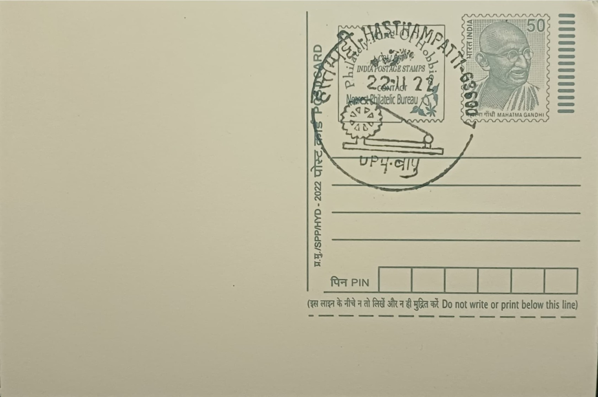

Gandhi Charkha and Bapu
காந்தியின் திருகைச் சக்கரமும் பாப்புவும்


The charkha, or spinning wheel, entered the vocabulary of India's freedom struggle not as an ancient relic but as a deliberately revived and redesigned tool. Gandhi encountered traditional spinning through Gangaben, a weaver's widow, around 1917 at his ashram, and his nephew Maganlal Gandhi spent the following months refining the mechanism into the compact, efficient form that came to be known as the 'Gandhi charkha' by 1918. Adopted as the emblem of the swadeshi and non-cooperation movements soon after, the wheel was paired in popular memory and in countless images with 'Bapu' himself, the affectionate name by which Gandhi (1869-1948) was known across India, so that the two together became shorthand for the philosophy of self-rule through self-made cloth.
As a subject for a postal pictorial cancellation, the charkha and Bapu motif belongs to the category of national-movement iconography rather than to any single monument or institution, commemorating an idea rather than a place. Its significance is twofold: it marks the economic programme of khadi, hand-spun and hand-woven cotton promoted as an alternative to British mill textiles, and it marks the moral register of ahimsa and simplicity that Gandhi attached to manual labour. The Indian National Congress backed the spinning programme from 1920, and the All India Spinners' Association, founded in 1925, gave the effort institutional structure, turning the charkha from a household implement into an organised instrument of economic nationalism practised in villages and towns across the subcontinent.
The Hasthampatti locality of Salem carries a direct and documented link to this history rather than a general or symbolic one. Gandhi visited Salem on 14 February 1934 during his countrywide tour against untouchability, and during that visit he stayed as a guest at the Hasthampatti residence of the landlord Natesa Pandaram. Salem and the wider Kongu region of western Tamil Nadu were already sites of active khadi production and Gandhian constructive work by this period, with local spinners' associations and khaddar depots feeding into the state-wide network coordinated under the AISA, so that Gandhi's personal presence in the town reinforced a connection to the charkha movement that already existed on the ground.
A specific and lasting outcome followed from that 1934 stay: the Government of India later acquired the Hasthampatti building in which Gandhi had lodged, and the very room he occupied was converted into the Mahatma Gandhi Philately Museum, inaugurated on 30 January 1997, the anniversary of Gandhi's assassination. The museum displays philatelic material connected to Gandhi and the freedom movement, including stamps, first-day covers and postal stationery issued by India and other countries, making the Hasthampatti post office premises themselves a repository of the very commemorative imagery that pictorial cancellations such as this one continue.
The Hasthampatti Sub Post Office, bearing PIN 636007, today functions inside this same Gandhi-associated building, placing the postal pictorial cancellation of the charkha and Bapu on a cover that can be franked within a few steps of the museum it depicts in spirit. The charkha's older association with the pre-1931 Indian national flag, where it appeared as a spinning-wheel motif later replaced by the Ashoka Chakra, gives the image a further layer of significance for collectors tracing the visual history of the independence movement. For philatelists, the cancellation thus functions less as decoration than as a marker tying a specific postal counter in Salem to a verified chapter of Gandhi's travels through Tamil Nadu.
| Date of Introduction | January 30, 1997 |
|---|---|
| Address | Sub Postmaster, |
| Hasthampatti SO, | |
| Salem (dt.), Tamil Nadu - 636007. |